Farming and Nature (Tech Tree)
This technology tree deals with farming and the manipulation of nature. This involves growing crops, gathering food, fruit trees, beekeeping, wine and beer production as well as fishing.
Farming
This branch is unlocked upon talking to Horadric about the kitchen garden after reading the sign at the blueprint table there. For more information on growing crops see farming.
| Technology | Prerequisite tech | Cost | Unlocks | |
|---|---|---|---|---|
| Garden Beds | None | Talk to Horadric about the kitchen garden | Blueprint: Empty garden bed | |
| Improvement | Garden Beds | 
|
Blueprint: Trunk | |
| Blueprint: Garden bed with sticks | ||||
| Gardening | Improvement | Create: Prayer for shoots and roots | ||

|
Perk: Farmer | |||
| Zombie gardening | Gardening | Talk to Gunter and dig up the buried zombie |
Blueprint: Zombie farm | |
| Decay | Garden Beds | Blueprint: Compost heap | ||
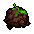 |
Create: Peat | |||
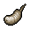 |
Gathering: Maggot | |||
| Simple Fertilizers | Decay | 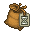 |
Create: Boost fertilizer I | |
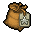 |
Create: Quality fertilizer I | |||
| Complex Fertilizers | Simple Fertilizers | 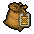 |
Create: Boost fertilizer II | |
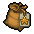 |
Create: Quality fertilizer II | |||
| Brewing | Decay | Blueprint: Brewing stand | ||
| Create: A mug of beer | ||||
| Zombie-brewery | Brewing | Talk to Gunter and dig up the buried zombie |
Blueprint: Zombie-brewery | |
| Digestion | Brewing | 
|
Blueprint: Fermentation barrel | |
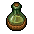 |
Create: Bottle of apple ferment | |||
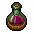 |
Create: Bottle of berry ferment | |||
| Strong Alcohol | Digestion + Winemaking |
Blueprint: Alcohol distiller | ||
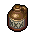 |
Create: Booze | |||
| Blending | Strong Alcohol | 
|
Perk: Wine Master | |
Nature
This branch is unlocked upon returning from the village for the first time and meeting Gerry near the kitchen garden.
| Technology | Prerequisite tech | Cost | Unlocks | |
|---|---|---|---|---|
| Gathering | None | Return from the village | 
|
Gathering: Edible mushroom |
| Gathering: Berry | ||||
| Gathering: Apple | ||||
| Master Gathering | Gathering | Gathering: Red mushroom | ||

|
Perk: Master Gatherer | |||
| Transplanting | Gathering | Blueprint: Place for the berry bush | ||
| Blueprint: Place for the apple tree | ||||
| Grape Farming | Transplanting | 
|
Blueprint: Vine trellis | |
| Gathering: Grapes | ||||
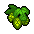 |
Gathering: Hops | |||
| Zombie vineyard | Grape Farming | Talk to Gunter and dig up the buried zombie |
Blueprint: Zombie vineyard | |
| Winemaking | Grape Farming | Blueprint: Vine press | ||
| Blueprint: Wine making barrel | ||||
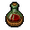 |
Create: Red wine | |||
| Zombie-winery | Winemaking | Talk to Gunter and dig up the buried zombie |
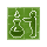 |
Blueprint: Zombie-winery |
| Beekeeping | Gathering | Gathering: Honey | ||
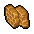 |
Gathering: Beeswax | |||
| Insects | Beekeeping | Gathering: Butterfly | ||
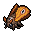 |
Gathering: Moth | |||
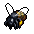 |
Gathering: Bee | |||
| Bee Domestication | Insects | 
|
Blueprint: Bee hive | |
| Beefriend | Bee Domestication | 
|
Perk: Beekeeper | |
| |||||